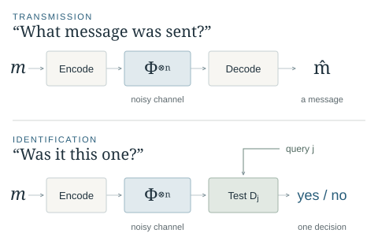

I / INFORMATION TASKS
Communication beyond transmission
In identification, the receiver only needs to test whether the transmitted message matches a specified candidate, as opposed to reconstructing it fully. I use geometric and probabilistic methods to bound the capabilities of quantum channels for this task. Recent work characterizes identification capacity for sufficiently low-noise channels and establishes its strict superadditivity.
